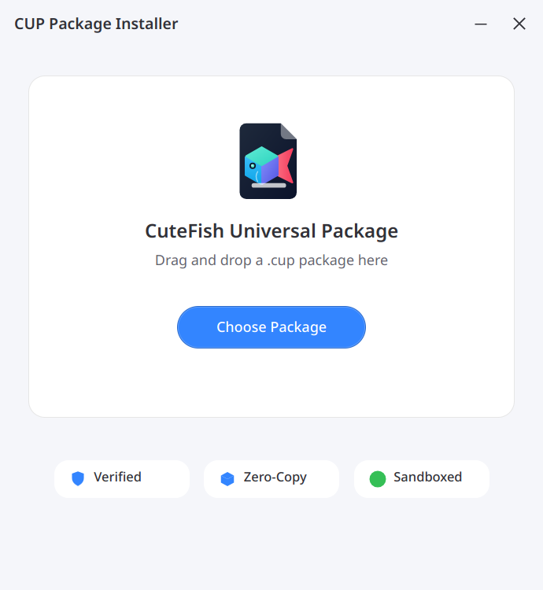

Zero extraction lag. Direct kernel execution via binfmt_misc. Ed25519 cryptographic security. Paired with a modern native Cutefish Toolkit desktop store. Crafted by UXLE.
Replacing obsolete monolithic packaging with a modern, high-speed, cryptographically sealed universal runtime.
No decompression delay. CUP leverages Linux Enhanced Read-Only File System (EROFS) with fixed-output LZ4 compression, mounting into the kernel page cache in under 1 millisecond.
Execute any .cup package directly from the terminal or double-click from your file manager. The Linux kernel recognizes CUP magic bytes and hands execution to the verified loader.
Every CUP package carries a tamper-evident digital seal. Signatures and SHA-256 payload integrity are verified in nanoseconds before a single line of binary code is executed.
Built natively with cutefish-toolkit and modern C++20. Adheres strictly to Cutefish OS design rules: squircle radiuses, blur glassmorphism, and instant light/dark styling.
Applications run enclosed inside secure Bubblewrap container namespaces. Restrict network access, protect user home folders, and enforce AppArmor profiles out-of-the-box.
One single .cup package runs consistently across Debian, Ubuntu, CutefishOS, Arch Linux, Fedora, and openSUSE without recompilation or dependency hell.
Crafted in pure C++20 with Cutefish UI guidelines for the smoothest desktop package management experience on Linux.
Native C++20 Cutefish Toolkit application presenting installed and featured CUP packages. Displays verified badges, developer signatures, and instant one-click launch capabilities.

Run our live simulator to see how the kernel and CUP daemon validate integrity and provision sandboxes in under 4 milliseconds.
Target: cutefish-calc.cup • Format v3.0 (Little-Endian)
[READY] Press "Run Verifier Demo" to execute real-time validation sequence...
Install the official Debian package or build directly from source for any Linux distribution.
Complete installation including CLI runner, daemon, kernel binfmt_misc rule, and Cutefish Toolkit GUI store.
Compile the high-performance C core, Rust crypto engine, and Cutefish Toolkit GUI from repository source.
Experience the sample Cutefish calculator packaged in the CUP v3.0 zero-copy format.